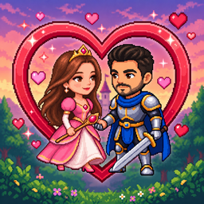

Zombileri yen, Prenses Beyza'yı kurtar!
Bir zamanlar Hatay topraklarında, Reyhanlı Krallığı'nda huzur içinde yaşayan güzel Prenses Beyza vardı. Bir gece karanlıktan gelen canavarlar onu kaçırdı. Kral Mustafa, kızını kurtaran savaşçıya büyük bir söz verdi. Cesur savaşçı Zekeriya yola çıkıyor…
Zombilerin üstüne basarak onları ezebilirsin. Her bölümün sonunda önce bölüm sonu canavarını yenmelisin. Her 40 altında +2 can kazanırsın.
Oyun klavye ile oynanır; bilgisayarda en iyi deneyimi verir.